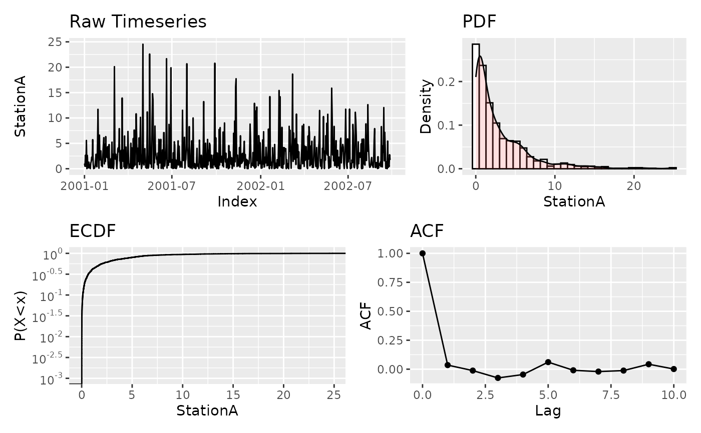
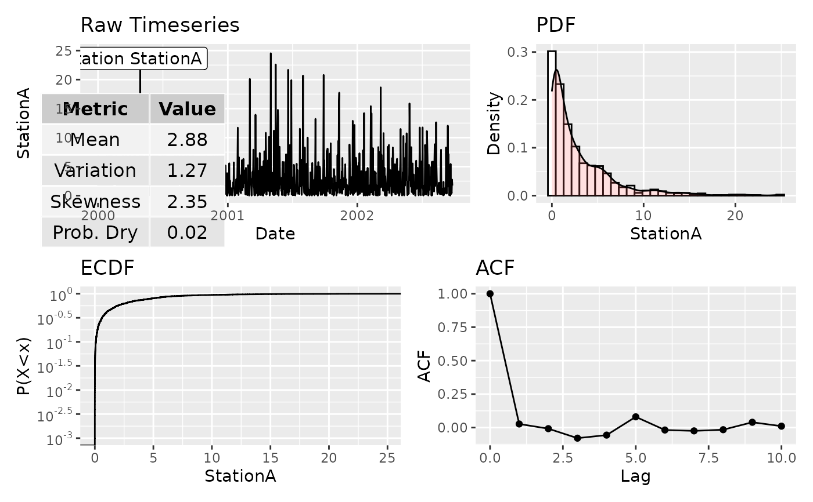

Computes a comprehensive set of summary statistics for one or more time
series stored as xts columns and optionally produces a four-panel diagnostic
plot (time series, probability density function, empirical cumulative
distribution function, and autocorrelation function). The statistics include
sample moments (mean, variance, skewness, kurtosis), L-moments, quantiles,
probability dry, and wet/dry transition statistics. When ignore_zeros
is TRUE, distributional statistics are computed only on values
exceeding zero_threshold, and transition statistics are omitted.
Multi-column input is supported: the statistics table then contains one
column per input series (named after the xts columns), and the plot output
is a named list of one panel per series. The internal computation is
vectorised across columns via matrixStats for computational efficiency.
Usage
basic_stats(
ts,
pstart = NA,
pend = NA,
show_label = TRUE,
label_prefix = "Station",
show_table = TRUE,
xpos_label = 0.1,
ypos_label = 0.95,
xpos_table = 0.1,
ypos_table = 0.15,
nbins = 30,
ignore_zeros = FALSE,
zero_threshold = 0.01,
plot = FALSE
)Arguments
- ts
An xts object. If multi-column, each column is treated as an independent series.
- pstart
Plot start date (character or date). If
NA, the first date of the series is used.- pend
Plot end date (character or date). If
NA, the last date of the series is used.- show_label
Logical. If
TRUE, a label with the series name is plotted on the timeseries panel. Default isTRUE.- label_prefix
Character prefix for the series label, e.g.
"Station". Default is"Station".- show_table
Logical. If
TRUE, a table of key statistics (mean, coefficient of variation, skewness, probability dry) is overlaid on the timeseries panel. Default isTRUE.- xpos_label
Horizontal position of the series label, as a fraction of the plot width (0–1). Default is
0.1.- ypos_label
Vertical position of the series label, as a fraction of the data range (0–1). Default is
0.95.- xpos_table
Horizontal position of the statistics table, as a fraction of the plot width (0–1). Default is
0.1.- ypos_table
Vertical position of the statistics table, as a fraction of the data range (0–1). Default is
0.15.- nbins
Number of bins for the PDF histogram. Default is
30.- ignore_zeros
Logical. If
TRUE, values at or belowzero_thresholdare excluded from distributional statistics and transition statistics are omitted. Default isFALSE.- zero_threshold
Numeric threshold below which values are treated as zero. Default is
0.01.- plot
Logical. If
TRUE, the diagnostic panel is built. Default isFALSE. For multi-column input one panel is produced per column.
Value
A list with two elements: stats_table, a data frame of
statistics (rows are the statistics, columns are the input series — named
after the input columns when more than one is supplied, otherwise
"Value"); and plot, which is NULL when
plot = FALSE, a single combined ggplot for a single-column input,
or a named list of one combined ggplot per column for a multi-column input.
Examples
# Synthetic daily precipitation series (two stations)
set.seed(123)
n <- 1000
dates <- seq(as.Date("2000-01-01"), by = "day", length.out = n)
prec <- xts::xts(cbind(
StationA = rgamma(n, shape = 0.6, scale = 5),
StationB = rgamma(n, shape = 0.7, scale = 4)),
order.by = dates)
# Single-column: statistics table only
bs <- basic_stats(prec[, 1], ignore_zeros = TRUE)
bs$stats_table
#> Value
#> NumofData 1000.00000
#> NumofMisData 0.00000
#> PercOfMissingData 0.00000
#> Min 0.01000
#> Max 24.89000
#> Mean 2.94000
#> Var 13.52000
#> StDev 3.68000
#> Variation 1.25000
#> Mom3 115.86000
#> Skewness 2.33000
#> Kurtosis 10.00000
#> Lmean 2.94000
#> LScale 1.74000
#> L3 0.72000
#> L4 0.34000
#> LVariation 0.59000
#> LSkewness 0.42000
#> LKurtosis 0.20000
#> Pdr 0.02000
#> Q5 0.04358
#> Q25 0.44946
#> Q50 1.62211
#> Q75 4.19588
#> Q95 10.74851
#> IQR 3.74642
# Single-column: with diagnostic panel
bs <- basic_stats(prec[, 1], pstart = "2001", pend = "2002",
show_table = FALSE, show_label = FALSE,
ignore_zeros = TRUE, plot = TRUE)
bs$plot
#> Warning: log-10 transformation introduced infinite values.

# Multi-column: one column of statistics per series, named plot list
wbs <- basic_stats(prec, plot = TRUE)
wbs$stats_table
#> StationA StationB
#> NumofData 1000.00000 1000.00000
#> NumofMisData 0.00000 0.00000
#> PercOfMissingData 0.00000 0.00000
#> Min 0.00000 0.00000
#> Max 24.89000 24.32000
#> Mean 2.88000 2.79000
#> Var 13.41000 11.18000
#> StDev 3.66000 3.34000
#> Variation 1.27000 1.20000
#> Mom3 115.38000 83.17000
#> Skewness 2.35000 2.23000
#> Kurtosis 10.00000 9.00000
#> Lmean 2.88000 2.79000
#> LScale 1.73000 1.60000
#> L3 0.73000 0.65000
#> L4 0.34000 0.32000
#> LVariation 0.60000 0.57000
#> LSkewness 0.42000 0.41000
#> LKurtosis 0.20000 0.20000
#> Pdr 0.02000 0.02000
#> Q5 0.02000 0.03000
#> Q25 0.40000 0.56000
#> Q50 1.54000 1.55000
#> Q75 4.15000 3.82000
#> Q95 10.67000 9.91000
#> IQR 3.75000 3.26000
#> MeanDAfterZero 3.95065 3.08129
#> VarDAfterZero 8.48221 7.43041
#> MeanDBeforeZero 3.50860 4.10947
#> VarDBeforeZero 18.26812 15.92218
#> MeanDAfterD 2.92114 2.84823
#> VarDAfterD 13.62788 11.37173
#> ProbDD 0.95796 0.95195
#> ProbNDND 0.00000 0.00000
wbs$plot[[1]]
#> Warning: log-10 transformation introduced infinite values.
